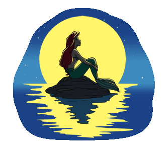
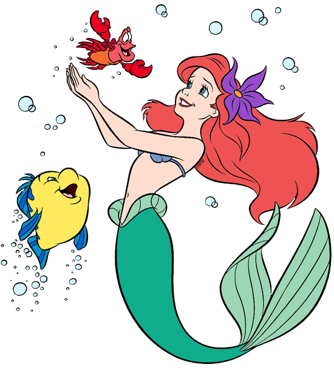
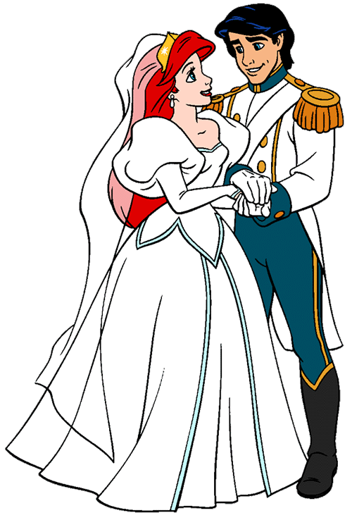
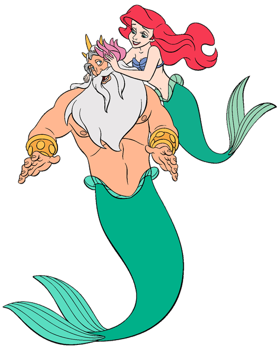

是於1989年由華特迪士尼所製作的第28部經典動畫電影長片，是由丹麥作家漢斯·克里斯蒂安·安徒生於1836年發表的童話作品《美人魚》所改編。此部動畫的初稿始於1988年9月23日，並由華特迪士尼影業於1989年11月17日首次公布。它在美國的票房收入超過八千四百萬美元，在國際上的票房收入亦突破九千九百萬美元。
《小美人魚》這部迪士尼動畫長片的成功，給予了迪士尼在八零年代初期長篇動畫所遭受一連串的失敗與批評之後有了休養生息的機會。《小美人魚》同時亦標誌著一個新的時代，被稱為迪士尼文藝復興的開端。.
   
一位年紀16歲的人魚公主愛麗兒，她厭倦了每天在海底的生活，並且對人類世界充滿了好奇心。她與最要好的朋友小比目魚，時常在一起收集人類掉落到海底的文物。有時她和小比目魚會偷偷游到海面去找海鷗史考托，向牠詢問有關她所找到人類文物的功用——即使史卡托總是提供愛麗兒錯誤的資訊。
愛麗兒的父親——人魚王國的國王——川頓，禁止人魚與人類一切的接觸，對人類充滿好奇的小女兒愛麗兒非常頭痛，於是派宮中的音樂大臣螃蟹賽巴斯丁監視愛麗兒的一舉一動。賽巴斯丁偷偷跟蹤意外發現愛麗兒的收藏寶穴，更發現愛麗兒與小比目魚又偷偷游到海面，正巧遇到在海面上一艘慶祝王子艾瑞克生日的船隊。此時突然發生了暴風雨，閃電擊中了船身。在一陣混亂中，愛麗兒救起了落水昏迷的艾瑞克，並把艾瑞克送回了岸邊。愛麗兒見到艾瑞克後便一見鐘情，並在艾瑞克意識模糊不清的狀態下唱了一首情歌獻給他。這時眾人已趕到海邊發現了艾瑞克，愛麗兒只能匆匆游回海底。艾瑞克從此在心中便留下了美麗嗓音女孩的印象，並且發誓一定要找到這個女孩。
自從愛麗兒遇到艾瑞克王子後，川頓國王察覺了愛麗兒的異狀，便詢問賽巴斯丁，緊張的賽巴斯丁不小心透露了愛麗兒救人類的事，川頓國王一氣之下將愛麗兒的收藏摧毀殆盡，連最心愛的王子雕像也被粉碎。
傷心欲絕的愛麗兒此時受了烏蘇拉的蠱惑，為了到陸地找尋艾瑞克，不顧賽巴斯丁的阻止，和擁有八爪章魚腳的女巫烏蘇拉交換條件。烏蘇拉要愛麗兒用她美麗的聲音來換取人類的雙腿，並把愛麗兒的聲音收藏在一個貝殼項鍊之中。只要愛麗兒在變成人類的第三天太陽下山之前得到艾瑞克的真愛之吻，愛麗兒便可以永遠變成人類。但如果沒有便要一生一世成為烏蘇拉的收藏。
在賽巴斯丁的幫忙下，愛麗兒在成為人類的第二天幾乎快要和艾瑞克接吻，卻被烏蘇拉的手下搗亂阻止了。烏蘇拉決定利用和愛麗兒交換來的聲音變成了一位美女凡妮莎來迷惑艾瑞克，並在第三天要和艾瑞克結婚。在婚禮上，賽巴斯丁、小比目魚已及史考托和他們的朋友故意破壞了烏蘇拉的婚禮，並且讓烏蘇拉脖子上收藏愛麗兒聲音的貝殼項鍊掉落在地上，正巧就掉在愛麗兒的腳邊，並讓愛麗兒恢復了說話能力，同時受迷惑的艾瑞克也恢復了神志，並認出愛麗兒就是當時船難搭救他的女孩。
但此時太陽已下山，愛麗兒變回人魚，烏蘇拉便強行擄走了愛麗兒。川頓國王為了救回愛女，決定代替愛麗兒承受契約內容，成為烏蘇拉的收藏品。三叉戟落入烏蘇拉手中，得到力量的烏蘇拉隨即宣布自己成為海底王國的女王。這時艾瑞克為了搭救愛麗兒，俯衝游入海底，並向烏蘇拉投擲了魚叉。被激怒的烏蘇拉把自己的身體巨大化，並掀起劇大漩渦，海底廢船因此浮出海面，正當烏蘇拉準備攻擊愛麗兒時，艾瑞克急中生智，爬上廢船並利用漩渦的力量，把尖銳的船桅對準巨大化烏蘇拉的身體，將她刺死。
烏蘇拉死後，契約解除，三叉戟回到川頓國王的手中，原本被烏蘇拉囚禁的子民重新變回人魚。川頓國王看著愛麗兒是如此深愛著艾瑞克，決定讓其追求自己的幸福，便用手中的三叉戟將愛麗兒變成人類。最後在眾人祝福下，愛麗兒與艾瑞克終於結婚，從此過著幸福快樂的生活。
維基百科 / google